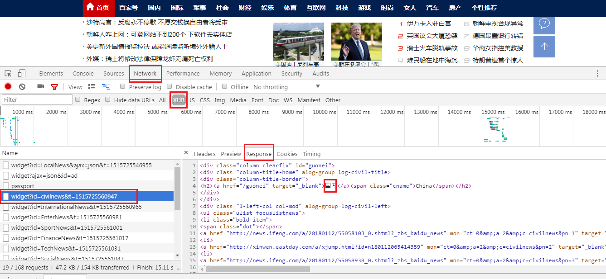

6.Scrapy新闻爬虫项目实战上
- 任务：将百度新闻首页的所有信息的爬取下来：http://news.baidu.com/
- 通过网页源代码还可以看到网页内容。如下：
...
<ul class="ulist focuslistnews">
<li class="bold-item">
<span class="dot"></span>
<a href="http://news.china.com/domesticgd/10000159/20180112/31945806.html" mon="ct=1&a=2&c=top&pn=1" target="_blank">央企年度监督检查情况公布 利润创近五年最好水平</a></li>
<li>
<a href="http://www.cac.gov.cn/2018-01/10/c_1122234687.htm" mon="ct=1&a=2&c=top&pn=2" target="_blank">国家网信办约谈“支付宝年度账单事件”当事企业负责人 </a></li>
<li>
<a href="http://news.ifeng.com/a/20180112/55058132_0.shtml?_zbs_baidu_news " mon="ct=1&a=2&c=top&pn=3" target="_blank">多地召开住房城乡工作会议 定调2018楼市调控</a></li>
<li>
<a href="http://xinwen.eastday.com/a/xjump.html?id=n180112080815324" mon="ct=1&a=2&c=top&pn=4" target="_blank">12部委首次推出煤炭业重组专门文件 兼并大潮将起 </a></li>
<li>
<a href="http://news.ifeng.com/a/20180112/55058103_0.shtml?_zbs_baidu_news " mon="ct=1&a=2&c=top&pn=5" target="_blank">2017年国家科技奖获奖项目巡礼：解密创新之路</a></li>
<li>
<a href="http://xinwen.eastday.com/a/xjump.html?id=n180112085639420" mon="ct=1&a=2&c=top&pn=6" target="_blank">环保部：12日起京津冀及周边将出现重污染天气过程</a></li>
</ul>
...
- 但是网页的第二屏内容，在网页源代码中就没有信息了：如下：
- 可以通过网页调试模式查看到下面的请求内容：是通过Ajax后续加载的

6.1 分析：
延迟加载的其他新闻地址为：
国内：http://news.baidu.com/widget?id=civilnews&t=1515727849441
- 国际：http://news.baidu.com/widget?id=InternationalNews&t=1515727849455
- 娱乐：http://news.baidu.com/widget?id=EnterNews&t=1515727849476
- 体育：http://news.baidu.com/widget?id=SportNews&t=1515727849533
- 财经：http://news.baidu.com/widget?id=FinanceNews&t=1515727849631
- 科技：http://news.baidu.com/widget?id=TechNews&t=1515727849790
- 社会：http://news.baidu.com/widget?id=SocialNews&t=1515727849858
- 军事：http://news.baidu.com/widget?id=MilitaryNews&t=1515727850011
- 互联网：http://news.baidu.com/widget?id=InternetNews&t=1515727850044
- 探索：http://news.baidu.com/widget?id=DiscoveryNews&t=1515727850077
- 女人：http://news.baidu.com/widget?id=LadyNews&t=1515727850110
- 健康：http://news.baidu.com/widget?id=HealthNews&t=1515727850228
6.1
- 创建百度新闻爬虫scrapy项目
F:\Python02>scrapy startproject baidunews
New Scrapy project 'baidunews', using template directory 'c:\\users\\administrat
or\\appdata\\local\\programs\\python\\python36-32\\lib\\site-packages\\scrapy\\t
emplates\\project', created in:
F:\Python02\baidunews
You can start your first spider with:
cd baidunews
scrapy genspider example example.com
- 创建爬虫文件:n1.py
F:\Python02\baidunews>scrapy genspider -t basic n1 baidu.com
Created spider 'n1' using template 'basic' in module:
baidunews.spiders.n1
F:\Python02\baidunews>
- 定义抓取数据格式：baidunews/items.py文件
# -*- coding: utf-8 -*-
# Define here the models for your scraped items
#
# See documentation in:
# https://doc.scrapy.org/en/latest/topics/items.html
import scrapy
class BaidunewsItem(scrapy.Item):
# define the fields for your item here like:
# name = scrapy.Field()
title = scrapy.Field()
link = scrapy.Field()
content = scrapy.Field()
- 更改配置文件：baidunews/settings.py
...
# Obey robots.txt rules
ROBOTSTXT_OBEY = False
...
# Configure item pipelines
# See https://doc.scrapy.org/en/latest/topics/item-pipeline.html
ITEM_PIPELINES = {
'baidunews.pipelines.BaidunewsPipeline': 300,
}
...
- 编辑爬虫文件：baidunews/spiders/n1.py
# -*- coding: utf-8 -*-
import scrapy
from baidunews.items import BaidunewsItem
from scrapy.http import Request
import re
class N1Spider(scrapy.Spider):
name = 'n1'
allowed_domains = ['baidu.com']
start_urls = ['http://news.baidu.com/']
header = {"User-Agent":"Mozilla/5.0 (Windows NT 6.1; Win64; x64) AppleWebKit/537.36 (KHTML, like Gecko) Chrome/59.0.3071.115 Safari/537.36"}
urllist=['http://news.baidu.com/widget?id=civilnews&t=1515727849441',
'http://news.baidu.com/widget?id=InternationalNews&t=1515727849455',
'http://news.baidu.com/widget?id=EnterNews&t=1515727849476',
'http://news.baidu.com/widget?id=SportNews&t=1515727849533',
'http://news.baidu.com/widget?id=FinanceNews&t=1515727849631',
'http://news.baidu.com/widget?id=TechNews&t=1515727849790',
'http://news.baidu.com/widget?id=SocialNews&t=1515727849858',
'http://news.baidu.com/widget?id=MilitaryNews&t=1515727850011',
'http://news.baidu.com/widget?id=InternetNews&t=1515727850044',
'http://news.baidu.com/widget?id=DiscoveryNews&t=1515727850077',
'http://news.baidu.com/widget?id=LadyNews&t=1515727850110',
'http://news.baidu.com/widget?id=HealthNews&t=1515727850228',
]
def parse(self, response):
#data = response.body.decode("utf-8","ignore")
#urls = response.xpath("//ul[@class='ulist focuslistnews']/li/a/@href").extract()
#for i in range(0,len(urls)):
# print(urls[i])
# yield Request(urls[i],callback=self.next2)
for j in range(0,len(self.urllist)):
yield Request(self.urllist[j],callback=self.next1)
def next1(self, response):
#data = response.body.decode("utf-8","ignore")
urls = response.xpath("//ul[@class='ulist focuslistnews']/li/a/@href").extract()
for i in range(0,len(urls)):
print(urls[i])
yield Request(urls[i],callback=self.next2)
def next2(self,response):
#print("aaaa")
item = BaidunewsItem()
item['title'] = response.xpath("/html/head/title/text()").extract()
item['link'] = response.url
item['content'] = response.body
#print(item['title'])
yield item
- 测试：
$ scrapy crawl n1 --nolog